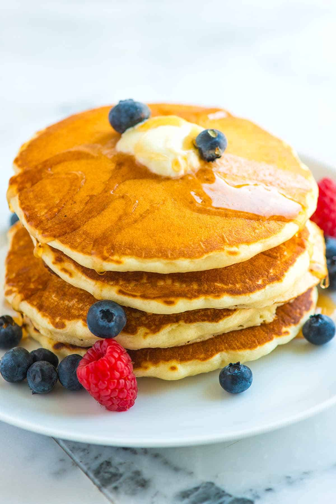

Pancakes

Description
Golden, fluffy, and impossibly light — pancakes are the ultimate breakfast classic. Whether stacked high or
served simply with a drizzle of syrup, each bite is soft and airy with just the right touch of sweetness. The
edges have a delicate crisp, while the center melts in your mouth, making them just as perfect for lazy weekend
mornings as they are for quick weekday treats.
Dress them up with fresh berries and whipped cream, go indulgent with chocolate chips and caramel sauce, or keep
it traditional with a pat of butter and a generous pour of maple syrup. However you serve them, pancakes are a
warm invitation to slow down, savor the moment, and start the day right.
Ingredients
- 1 ½ Cups (195g) All-Purpose Flour
- 1 Tbsp Baking Powder
- 1 ¼ Cups (295ml) Milk
- 1 Large Egg
- 5 Tbsp (70g) Unsalted Butter
- 2 Tbsp Sugar
- 2 Tsp Vanilla Extract
Steps
- Melt the butter in a small saucepan or microwave, then set aside to cool slightly.
- In a medium mixing bowl, whisk together the flour, sugar, baking powder, and salt until well
combined.
- In a separate bowl, beat the milk, egg, melted butter, and vanilla extract until smooth. A few
small bits of solidified butter are fine.
- Pour the wet mixture into the dry ingredients and gently whisk until just blended. The batter
should be thick and slightly lumpy. If it’s too thick, stir in a splash of milk. Let it rest briefly so
bubbles can form.
- Preheat a skillet or griddle over medium heat. Test readiness by sprinkling a few drops of
water on the surface — they should sizzle and evaporate quickly.
- Lightly brush the hot surface with melted butter for crisp edges (optional if using nonstick).
Scoop about 1/4 cup of batter per pancake and spread into a 4-inch round.
- Cook for 1–2 minutes, until the edges look set and bubbles pop on the surface. Flip and cook
for another 1–2 minutes, until golden and cooked through. Serve warm with syrup, extra butter, and your
favorite toppings.
Home